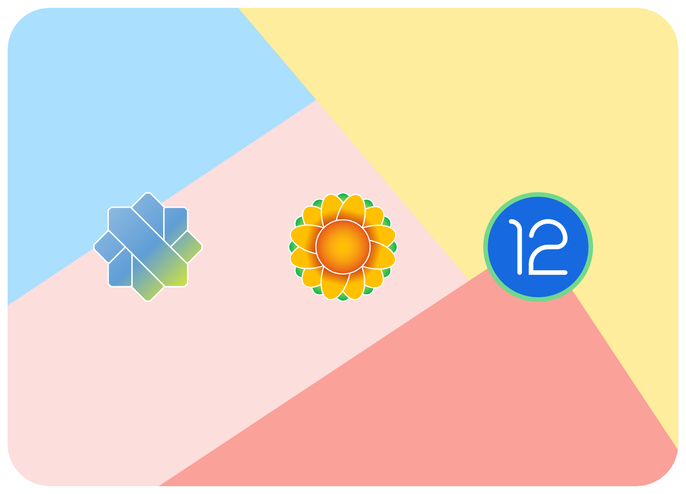

Loading...
menu
KaleidoscopeOS Download Center
Project Kaleidoscope
Loading device list...
Your browser does not support iframe.Please use the browser of the latest version of chromium kernel to access.
KaleidoscopeOS
Sunflower Leaf

Select Your Device